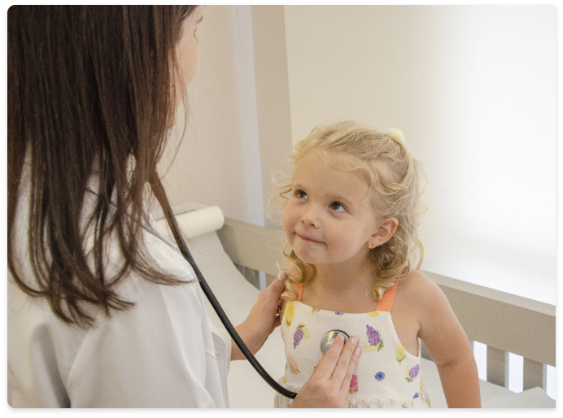

Sobre a
Dra. Suzane Sales
Pediatra e Nefrologista
Formada pela Faculdade de Medicina do ABC, a doutora Suzane Sales é
especializada em pediatria pela Santa Casa de Misericórdia de São Paulo,
além de ser sub-especializada em nefrologia pela Faculdade de Medicina da USP.
Em mais de 10 anos de carreira, a profissional já passou por diversos hospitais
de referência como o Hospital Sabará, especializado em crianças e adolescentes,
e há mais de 5 anos integra o corpo clínico dos hospitais Israelita Albert
Einstein e Hospital das Clínicas de São Paulo. Neste último, a doutora é
integrante da equipe de nefrologia pediátrica.

Fala, Doutora!
“O carinho pelas crianças sempre me incentivou e foi que o
me motivou dedicar a minha vida à pediatria.”
“Sou mãe de uma menina de 3 aninhos. Compreendo cada vez
mais os desafios que a vida nos impõe com a rotina intensa,
hiper conexão, alimentos ultra processados e excessos em
geral que podem influenciar na saúde física e mental dos nossos pequenos.
Faz parte do meu estilo de atendimento avaliar a criança como um todo,
sempre prezando por uma vida mais saudável e equilibrada. Meu grande
propósito é promover o desenvolvimento de crianças saudáveis e felizes.
A participação da família é fundamental no processo de atendimento. Gosto
de envolver todos os integrantes do núcleo familiar para compreender as
dinâmicas e rotinas, criando um plano de atendimento personalizado. “

fale
pelo WhatsApp
ligue
para
11 91057.8890
Trajetória Médica
Títulos
-
Especialista em Nefrologia Pediátrica pela Sociedade Brasileira de Nefrologia - 2017
-
Especialista em Pediatria (TEP) pela Sociedade Brasileira de Pediatria - 2015
Residência Médica
-
Residência médica no Programa de Nefrologia Pediátrica do Hospital das Clínicas – Instituto da Criança (FMUSP-HC), iniciado em 2015 e concluído em 2017.
-
Residência médica no Programa de Pediatria da Irmandade da Santa Casa de Misericórdia de São Paulo, iniciado em 2013 e concluído em 2015.
Experiência Profissional
-
Médica plantonista PS Pediatria do Hospital Israelita Albert Einstein unidade Morumbi – Admissão em janeiro de 2017
-
Médica da equipe de nefrologia Pediátrica do Instituto da Criança (FMUSP-HC) – Admissão em junho de 2018.
-
Médica plantonista da Enfermaria do Hospital Sabará 2016-2017